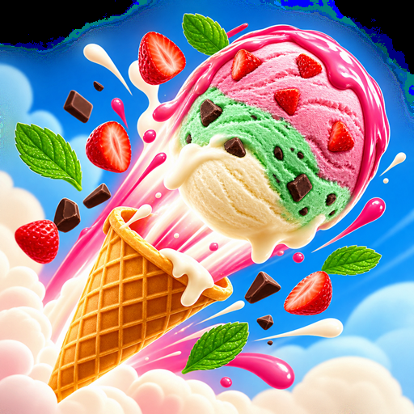

Scoop
An ice cream shop on the beat. One rush, one queue, one ridiculous tower.
Serve ice cream to the beat. One shift is three minutes long. Orders arrive on the beat, the tempo climbs from 92 to 148 BPM while you work, and every cone you hand over on the beat pays more than one you fumble out half a second late. It is a cooking rush with a metronome in it. Build in order: cone first, then the scoops, then the topping. Wrong thing, wrong order, and that cone goes in the bin. Every scoop you serve stacks onto one cone at the edge of the counter, growing and leaning all rush. Portrait, one hand, no tutorial to sit through. Twelve flavours, and each one changes which customers are worth chasing.
Get it on Google PlayScreenshots //
Dev log //
- Faces at the counter, a guided first rush, a gentler opening, no IAP
- Slate finish: all 15 games now build a signed release bundle
The 2 most recent changes worth reading, out of 14 commits.
Every line above is a real commit from this app's repository, on the date it was made. Build chores, merges and internal housekeeping are filtered out.